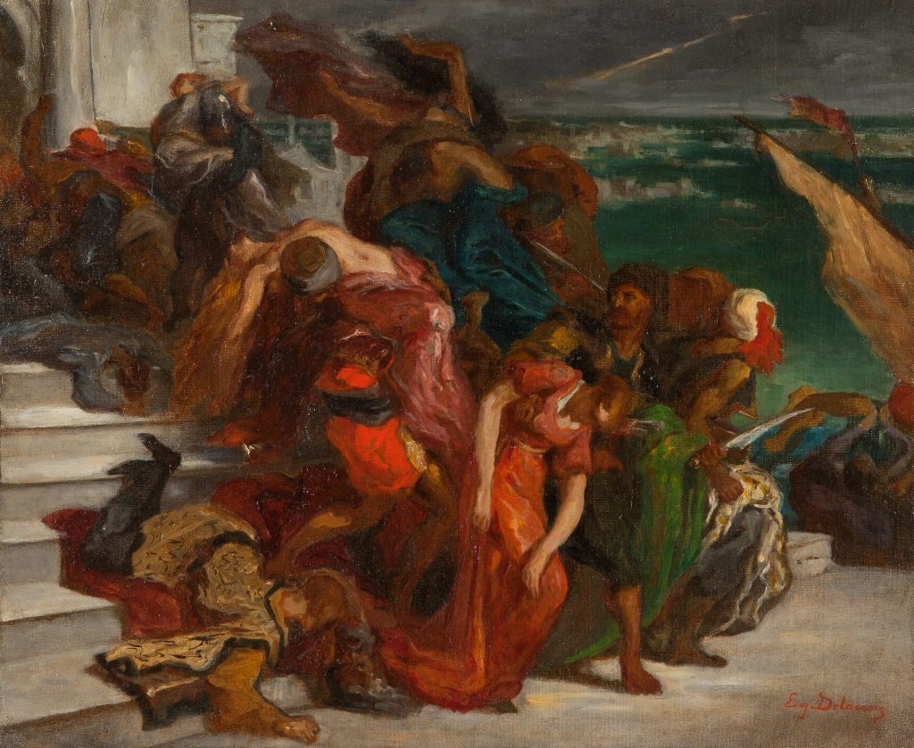

Frauenraub Aus: Ulrich Christoffel, Eugéne Delacroix
NEUE KUNSTBÜCHER BEI BRUCKMANN
ROGIER VAN DER WEYDEN
Von Hermann Beenken. 106 Seiten Text mit 3 Abbildungen und 128 Seiten Bilder sowie 4
Farbtafeln. Leinen DM 29,-
EUGÈNE DELACROIX
Der Maler- der Symbolist. Von Ulrich Christoffel. 176 Seiten mit 88 Bildern und 8
Farbtafeln. Leinen DM 24,-
DIE BAROCKE FRESKOMALEREI IN DEUTSCHLAND
Ihre Entwicklung und europäische Wirkung
Von Hans Tintelnot. 336 Seiten mit 166 Abbildungen, 3 Karten und 8 Farbtafeln. Leinen DM 48,-
Einzelprospekte dieser Bände liegen bei Ihrem Buchhändler auf oder können- falls dort gerade
nicht greifbar- auf Verlangen vom Verlag kostenlos direkt bezogen werden.
Die Werke selbst hält Ihr Buchhändler auf Lager oder besorgt sie Ihnen schnellstens.
VERLAG F. BRUCKMANN Postabschrift: München 20, Abholfach